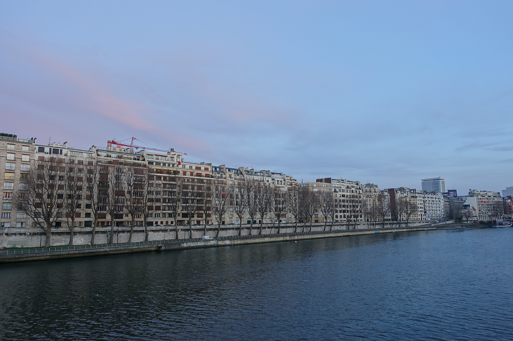

/ The Seine is France’s third-longest river, extending 485 miles from Dijon to the English Channel.
/ The river has been the subject of many famous impressionist paintings, including Monet’s Bathers at La Grenouillere and Renoir’s Seine River at Asnieres
/ The Seine still supplies about half of the water used in Paris.
/Each summer in Paris, roadways on the banks of the Seine are closed and covered in sand and palm trees, transforming them into Paris Plages, or Paris Beaches.
/Joan of Arc’s ashes were scattered in the Seine at Rouen.